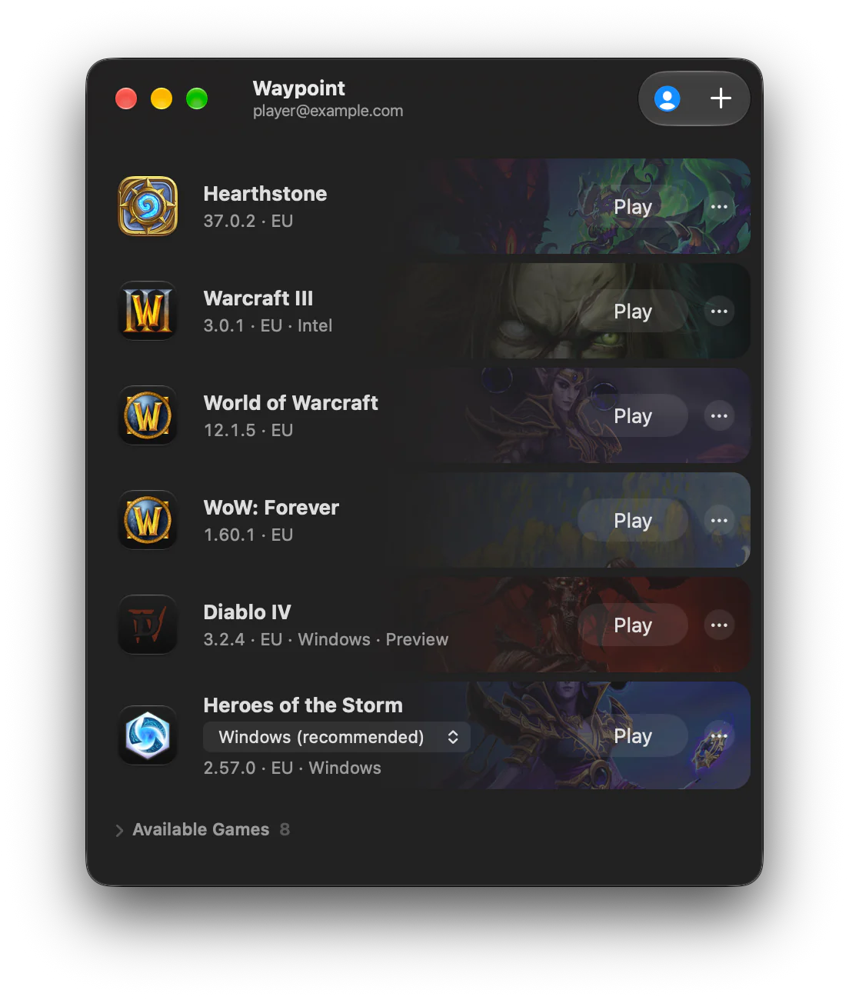

Waypoint A native Battle.net launcher for Apple Silicon Macs.
Install, update and launch Blizzard games without the Battle.net app. The launcher runs natively. Just press Play.
Download for macOS View Source on GitHub
Requires an Apple Silicon Mac with macOS 14 or later.
Free, open source and unofficial.

Install, update and play in one native window.
A launcher should install your games, keep them up to date, and sign you in. Waypoint does that in a native Swift and AppKit window, with downloads straight from Blizzard and no Battle.net app or Agent needed to play.
-
Your library in one window
Games already on your Mac appear in the library, including ones Battle.net installed. Install more from the Available Games list below them.
-
Install, update and repair
Download directly from Blizzard, update games installed by either launcher, and use Verify Files to repair missing or corrupt content. Automatic game updates are optional, per game.
-
Downloads you can leave
Installs and updates survive quitting, crashes and Waypoint's own updates. Pause and resume, set a speed limit, or keep the Mac awake for a download.
-
Sign in once per game
Use the official Battle.net web login, including two-factor authentication. Switch accounts, or use Play As for a single launch.
-
Windows games, too
The Windows edition of Heroes of the Storm runs with a free Wine component; CrossOver is not required. Overwatch, Diablo IV and Diablo II: Resurrected are in Preview.
-
Small and native
A native Swift and AppKit app for Apple silicon. The app is 9.6 MB, about 4.5 MB to download. The menu bar item is off unless you turn it on in Settings.
Supported games
World of Warcraft, Hearthstone and other Mac games use their own executables. Supported Windows editions use an optional Wine runtime that downloads on demand.
Tested
Install, launch and updates
- HearthstoneNative
- World of Warcraft: RetailNative
- World of Warcraft: ForeverNative
- World of Warcraft: Classic EraNative
- Warcraft III: ReforgedRosetta
- Heroes of the StormWindows, or macOS under Rosetta
- OverwatchWindows Preview
- Diablo IVWindows Preview
Available
Not yet tested
- World of Warcraft: Classic, Anniversary
- StarCraft II
- StarCraft: Remastered
- Diablo III
- Diablo II: ResurrectedWindows Preview
Status combines the developer's hands-on testing with usage logs through November 11, 2026. Windows Heroes of the Storm needs Rosetta and macOS 15 or later; Windows games in Preview need Rosetta and macOS 26.5 or later. Blizzard's ownership and account requirements still apply, including Overwatch SMS Protect where required. See the full status table.
Frequently asked questions
Is there a native Battle.net launcher for Apple Silicon Macs?
Waypoint is one: an unofficial, open-source launcher built for arm64 with Swift and AppKit. It installs, updates and launches Blizzard games without the Battle.net app, and the launcher itself never needs Rosetta. Some games still do; see Supported games.
Can I play World of Warcraft on a Mac without the Battle.net app?
Yes. Waypoint downloads WoW straight from Blizzard, keeps it up to date and signs you in, for Retail, Classic Era and the other editions above. It also picks up games you already installed with Battle.net.
How do I sign in? Does Waypoint see my password?
You sign in on Battle.net's own web login page, including two-factor authentication. Waypoint keeps the sign-in each game needs in your Keychain. Saving your email and password is optional and off until you choose it; they stay in Keychain too.
Can I play Overwatch or Diablo IV on a Mac?
Their Windows editions run in Preview through a free Wine component that Waypoint downloads when needed; CrossOver isn't required. They need Apple silicon, Rosetta and macOS 26.5 or later. Diablo II: Resurrected is in Preview too.
Does it work alongside Battle.net?
Yes. Waypoint finds Battle.net's installs and updates games installed by either app, and Battle.net still recognizes games installed with Waypoint. Quit Battle.net and its Agent before installing or updating, so the two don't write the same files.
Is it official? Is it safe?
It's a fan project, not affiliated with Blizzard. Releases are signed with a Developer ID and notarized by Apple, and all the source is on GitHub. Blizzard doesn't officially support launching games outside Battle.net; see the Disclaimer.
Does it run on Intel Macs?
No. Waypoint needs an Apple Silicon Mac with macOS 14 or later.
Get Waypoint
Download the DMG, open it, and drag Waypoint to Applications. Releases are signed with a Developer ID and notarized by Apple, so the app opens without warnings.
Download for macOS Release Notes
Or install it with Homebrew:
brew install --cask wowlocal/tap/waypointRequires an Apple Silicon Mac with macOS 14 or later.